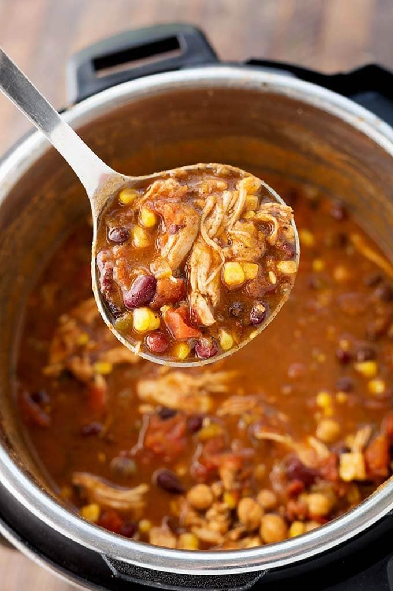

Taco Soup

Description
Everything gets thrown in the Instant Pot for this fuss-free, set-and-forget meal.
Ingredients
- 2 oz taco seasoning, divided
- 1 lb chicken breast
- 1 (15 oz) can black beans, drained and rinsed
- 1 (15 oz) can garbanzo beans, drained and rinsed
- 1 (14 oz) can diced tomatoes, with juice
- 1 (10 oz) can diced tomatoes and green chiles
- 1 (14 oz) can chicken broth, low sodium
- 1 (15 oz) can corn, drained
Garnishes:
- Sour cream
- Avocado
- Tortilla chips
- Cilantro
- Fresh lime juice
- Shredded cheese
- Sliced jalapenos
Steps
- Place the chicken breasts in a large plastic zip closure bag. Sprinkle 1 of the taco seasoning packets over all sides of the chicken. Close the bag and rub the seasoning into the meat. Set aside.
- Press the Pressure Cook/Manual button on the pressure cooker, then press the +/- button or dial to select 4 minutes. High Pressure. This will start the pot and get it warming up.
- Add all of the other ingredients, except the corn, to the pot. Stir.
- Add the chicken breasts to the pot and gently press them down to submerge them. Close the lid and set the steam release knob to the Sealing position.
- When the cook cycle has finished, turn off the pot and let it sit undisturbed for 12 minutes (12 minute natural release). Then turn the steam release knob to the Venting position to release the remaining steam/pressure.
- When the pin in the lid drops back down, open the lid and add the corn.
- Remove the chicken breasts to a plate and shred the meat using two forks, then return chicken to the pot. Stir well and season to taste.
- Garnish and serve!